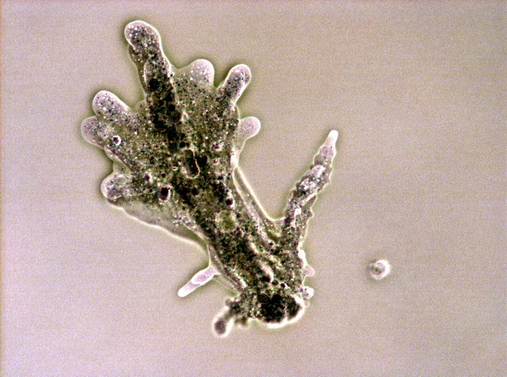
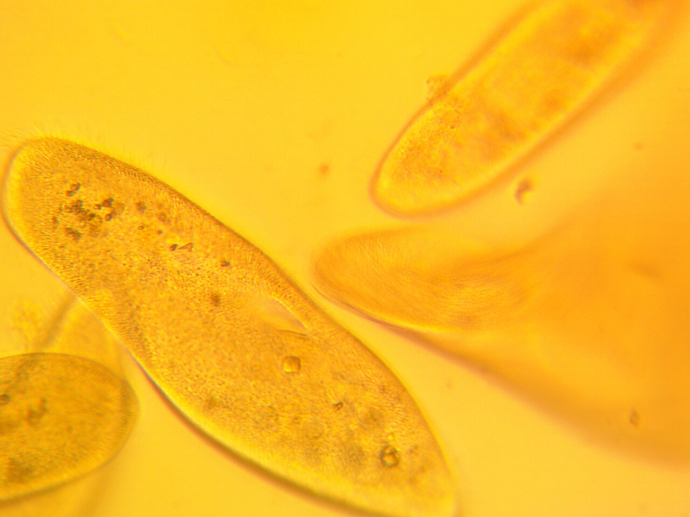
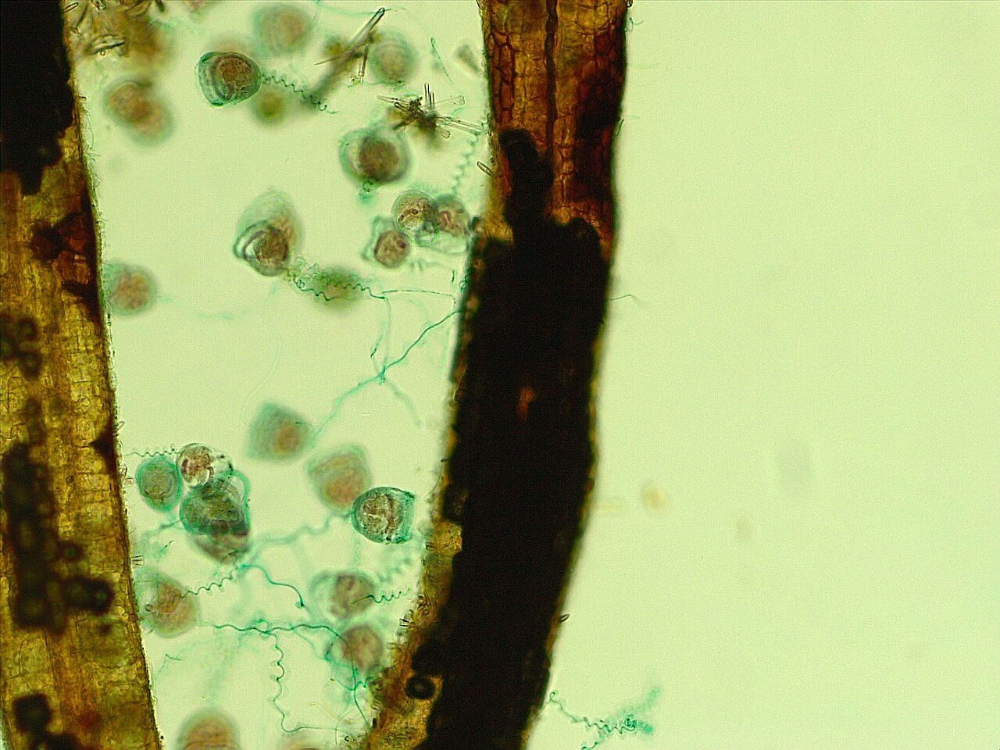

Evidence & image credits.
Follow the source of a biological claim, inspect the rights of an imported image, and distinguish reference evidence from generated visual interpretation.
Evidence and confidence.
Research checked 30 October 2026. Technical and biological claims use institutional resources, primary studies, microscopy observations and research reviews. Source identifiers link back here from the reading pages. External sources require internet access; the atlas, art and imported images work offline.
Scale brackets organize the references for browsing; they are not universal species limits. Magnification examples assume stated optics. Paintings have no calibrated scale bars. Proposed interactions are original interpretations, not claims that animals plan or use powers in a human sense.
Important gaps remain: measured local coexistence, species-level diets and hydration limits, live motion sequences, calibrated sample depth and optical settings. The selected still images establish appearance, not a complete behavioral model.
Research bibliography.
- S01 / Mites as miniature animals
USDA/IDtools — Oribatida identification guide
Institutional identification resource. Armored moss-mite morphology and distinctions from other mite groups. Does not imply all mites have the same diet.
- S02 / Water-film animals
Lucid identification key — Tardigrada
Identification resource: normal adult size, unjointed legs, wet habitats and inactive dry stages. Its common adult interval is 0.25–0.5 mm; reported extremes extend beyond it.
- S03 / Dormancy
American Museum of Natural History — Tardigrade
Museum explanation of water loss and survival. Supports dormancy as a state change; does not support invulnerability during active movement.
- S04 / Amoeba dimensions and morphology
NIES — Amoeba morphology database
Institutional species descriptions with underlying references. Amoeba proteus can reach about 600 µm or more. Historical taxonomy and species identifications need care.
- S05 / Engulfing prey
Jeon & Jeon (1976) — SEM observations of Amoeba proteus during phagocytosis
Primary research, Journal of Protozoology. Substrate attachment and broad pseudopods forming a food cup. DOI: 10.1111/j.1550-7408.1976.tb05249.x.
- S06 / Amoeboid locomotion
De la Fuente et al. (2019) — Evidence of conditioned behavior in amoebae
Primary research. Consulted for pseudopodia, cytoplasmic streaming and response to chemical/physical cues; the atlas does not extrapolate human-like intelligence from the behavioral experiments.
- S07 / Paramecium dimensions
Martin Kreutz — Paramecium caudatum, Real Micro Life
Firsthand illustrated observations, including measured 200–260 µm cells. A population observation, not a universal size interval for all Paramecium species.
- S08 / Ciliary escape
Ogura & Takahashi (1976) — Artificial deciliation causes loss of calcium-dependent responses in Paramecium
Primary experimental report: obstacle-triggered ciliary reversal. DOI: 10.1038/264170a0.
- S09 / Short-range defensive propulsion
Knoll, Haacke-Bell & Plattner (1991) — Local trichocyst exocytosis provides an efficient escape mechanism
Primary study of Paramecium escaping predatory Dileptus through local discharge. Supports an escape response rather than ranged projectile combat.
- S10 / Attached ciliates
NIES — Vorticella morphology database
Institutional descriptions; body and stalk lengths are distinct measurements. Different populations and cited studies report different size intervals.
- S11 / Contractile stalk mechanics
Upadhyaya et al. (2008) — Power-Limited Contraction Dynamics of Vorticella convallaria
Primary biophysical study of rapid stalk contraction. Supports a fast retract/slow return contrast, with substrate attachment essential.
- S12 / Small flagellate size
Podwin, Kubicki & Dziuban (2017) — Study of the behavior of Euglena viridis, Euglena gracilis and Lepadella patella cultured in all-glass microaquarium
Primary microaquarium study: typical E. gracilis length 35–50 µm and E. viridis 40–65 µm. DOI: 10.1007/s10544-017-0205-0.
- S13 / Following light
Giometto et al. (2015) — Generalized receptor law governs phototaxis in Euglena gracilis
Primary controlled-light experiments. Light-response apparatus and preferred light intensity; positive and negative phototaxis depend on conditions.
- S14 / Diatom traction
Bondoc et al. (2016) — Selective silicate-directed motility in diatoms
Primary study of a biofilm-forming pennate diatom. Raphe-associated secretion and substrate gliding are species-specific; not all diatoms glide.
- S15 / Microscale fluid mechanics
Lauga & Powers (2009) — The hydrodynamics of swimming microorganisms
Research review, Reports on Progress in Physics 72, 096601. Viscous dominance, reciprocal motion and swimming mechanics. DOI: 10.1088/0034-4885/72/9/096601.
- S16 / Biofilm heterogeneity
Jo, Price-Whelan & Dietrich (2022) — Gradients and consequences of heterogeneity in biofilms
Research review of resource gradients and spatially differentiated microbial assemblages. Specific oxygen and nutrient fields require habitat measurements.
- S17 / Optical resolution
Nikon MicroscopyU — Numerical Aperture
Instrument-maker technical reference: NA governs resolving power and light collection. Zoom alone cannot create new structural detail.
- S18 / Focus
Nikon MicroscopyU — Depth of Field and Depth of Focus
Technical reference showing rapid loss of specimen depth of field with increasing numerical aperture; values depend on the optical system.
- S19 / DIC appearance
Nikon MicroscopyU — Differential Interference Contrast
Technical reference: directional contrast comes from optical-path gradients. The apparent relief is not a direct topographic height map.
- S20 / SEM preparation
James Cook University — Scanning Electron Microscope sample requirements
Facility guidance: conventional high-vacuum SEM requires stable dry specimens, often with conductive coating.
- S21 / Cryo and environmental exceptions
Weizmann Institute — Cryo SEM, life science
Facility explanation of frozen hydrated samples, possible preparation artifacts and the environmental-SEM exception. Does not make conventional SEM a live underwater camera.
- S22 / TEM as a section
Richard Allen — Paramecium caudatum, CIL:36755
Primary microscopy dataset: fixed, resin-embedded, approximately 75 nm sections. Supports an ultrastructure reference distinct from a whole-organism environment.
- S24 / Physical field size
Nikon MicroscopyU — Field of View
Technical reference for field number divided by objective magnification. FN18 is an explicit illustrative assumption; camera crops and auxiliary optics change the field.
- S23 / Feeding diversity
Potapov et al. (2022) — Feeding habits and multifunctional classification of soil-associated consumers
Research synthesis across soil food webs, including mites, protists and rotifers. Useful caution against treating every small animal as a predator.
Reference images & individual rights.
The twelve selected images are downloaded into assets/references/. Each is credited below and beside its use. Creators retain their rights; the atlas does not relicense these images as a collection. CC BY-SA adaptations must follow their applicable share-alike terms. Commons thumbnails may reduce resolution; there are no additional crops, color changes or removed scale bars.
The machine-readable manifest includes source pages, original and downloaded URLs, creators, license links, access date, changes and SHA-256 checksums. Public-domain and CC0 status are reproduced from source declarations. An image license does not establish specimen identification or ecological coexistence.
Two context exceptions are intentional: Antarctic marine diatoms and marine seagrass biofilm are labeled morphology/material analogues. The source for the light-microscope tardigrade acknowledges phone-camera filtering. The Euglena reference has a strongly colored background; do not infer natural water color or a fully specified optical setup from it.


Commons-provided thumbnail when available; no crop or recoloring.

_7207.JPG){kind=link}
Commons-provided thumbnail when available; no crop or recoloring.


Commons-provided thumbnail when available; no crop or recoloring.


Commons-provided thumbnail when available; no crop or recoloring.

_-_Phylum_Rotifera.jpg){kind=link}
Commons-provided thumbnail when available; no crop or recoloring.



Commons-provided thumbnail when available; no crop or recoloring.



Commons-provided thumbnail when available; no crop or recoloring.



Commons-provided thumbnail when available; no crop or recoloring.


Commons-provided thumbnail when available; no crop or recoloring.


Commons-provided thumbnail when available; no crop or recoloring.


Commons-provided thumbnail when available; no crop or recoloring.


Commons-provided thumbnail when available; no crop or recoloring.
Generated artwork and reproducibility.
Four original boards, each with three views, were made with the built-in image_gen tool from text prompts and saved as local WebP files. They are explicitly marked as AI concept art. The prompt set preserves the common brief and scene specifications. The actual artwork is linked on each scale page and in visual styles, with known caveats.
Rebuild the static HTML with python3 micro/research/build.py. Refresh the image collection with python3 micro/research/fetch_references.py when network access is available; that refresh can update source metadata or source-file revisions. Open index.html directly, or serve this directory with a basic local HTTP server. No framework, remote font or CDN is required.